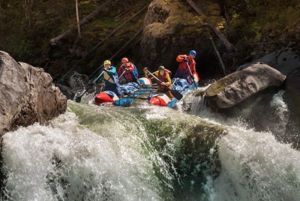

Our Purpose is To connect adventure seekers with the raw, untamed beauty of Norway’s rivers, fostering a deep respect for nature through safe, exhilarating, and expertly guided white-water experiences. "


Our Purpose is To connect adventure seekers with the raw, untamed beauty of Norway’s rivers, fostering a deep respect for nature through safe, exhilarating, and expertly guided white-water experiences. "
The story of Sommychris Rafting in Norway is one of discipline, a commitment to quality, and an unwavering passion for the Norwegian wilderness. Our foundation is built on the belief that the best adventures are rooted in professional excellence and rigorous attention to detail. Before launching our rafting operations, our team spent years cultivating expertise in software development and data research. This technical background taught us the value of precision, the importance of structural integrity in complex systems, and the confidence required to tackle the most demanding challenges.Driven by a pursuit of professional excellence highlighted by our dedication to international standards and quality management systems—we decided to apply this same level of care to the river. We believe that professional rafting requires more than just a love for the water; it requires a commitment to safety, standardized operations, and meticulous research.Today, we bring that unique blend of analytical expertise and outdoor passion to every expedition. Whether we are navigating the rapids or managing the logistics of your journey, our mission is to provide an experience that is as safe and structured as it is exhilarating. At Sommychris, we don’t just guide you down the river we ensure that every detail of your adventure meets the highest standards of professional quality.